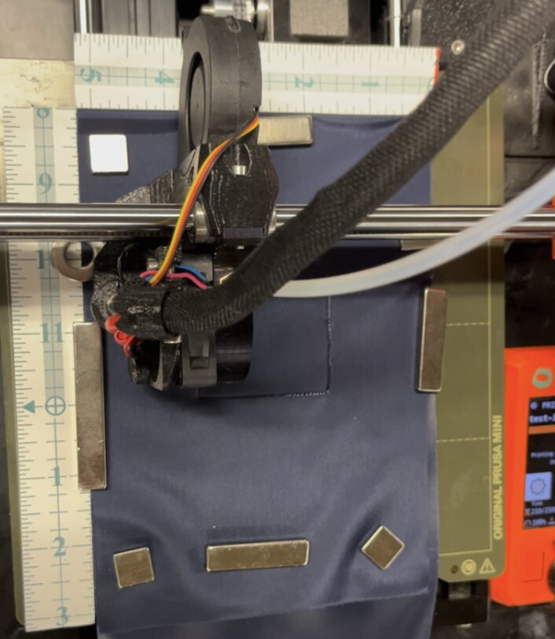
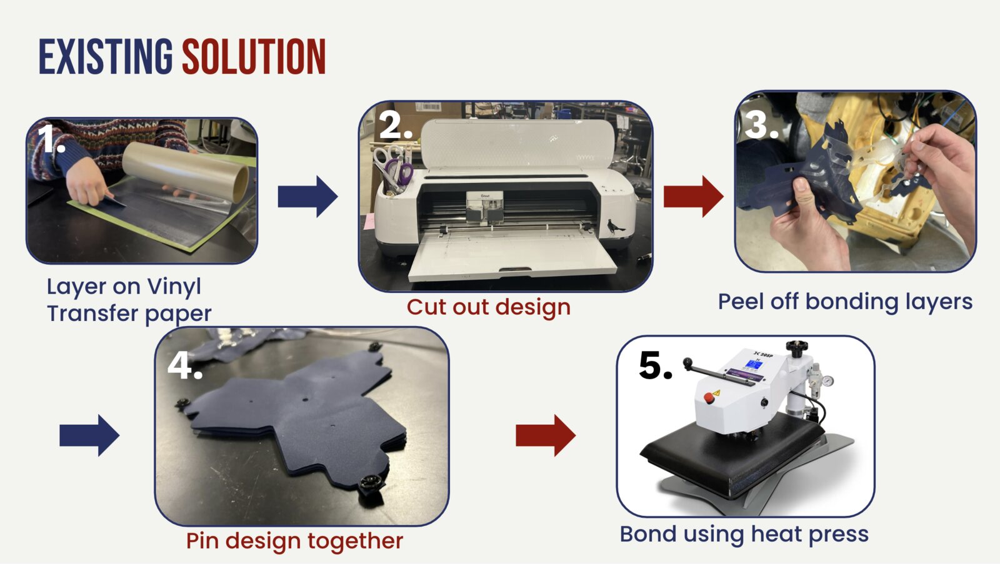
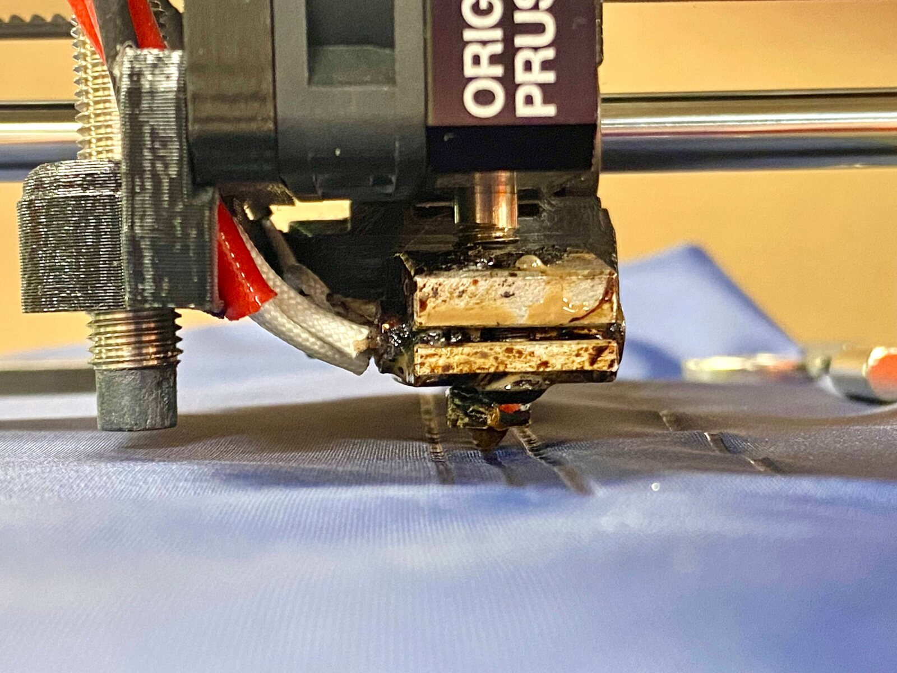
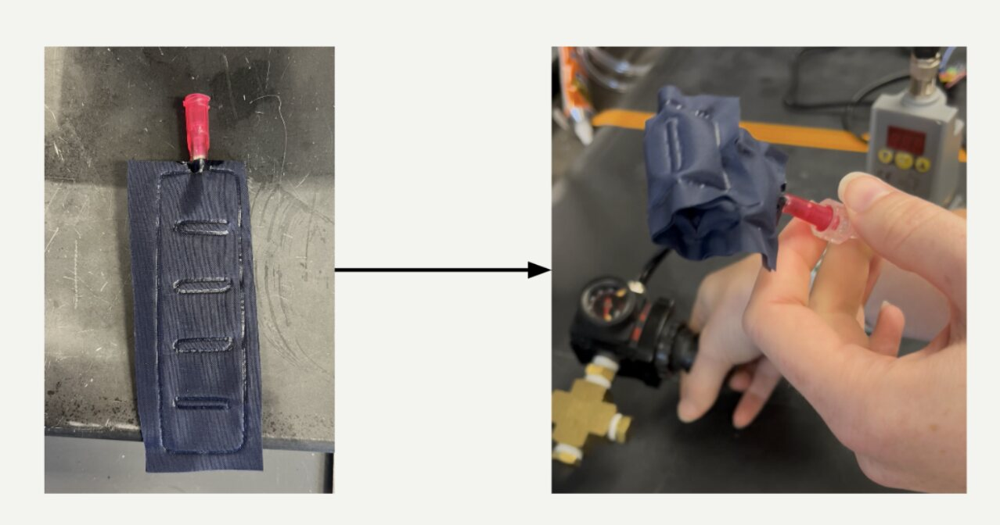
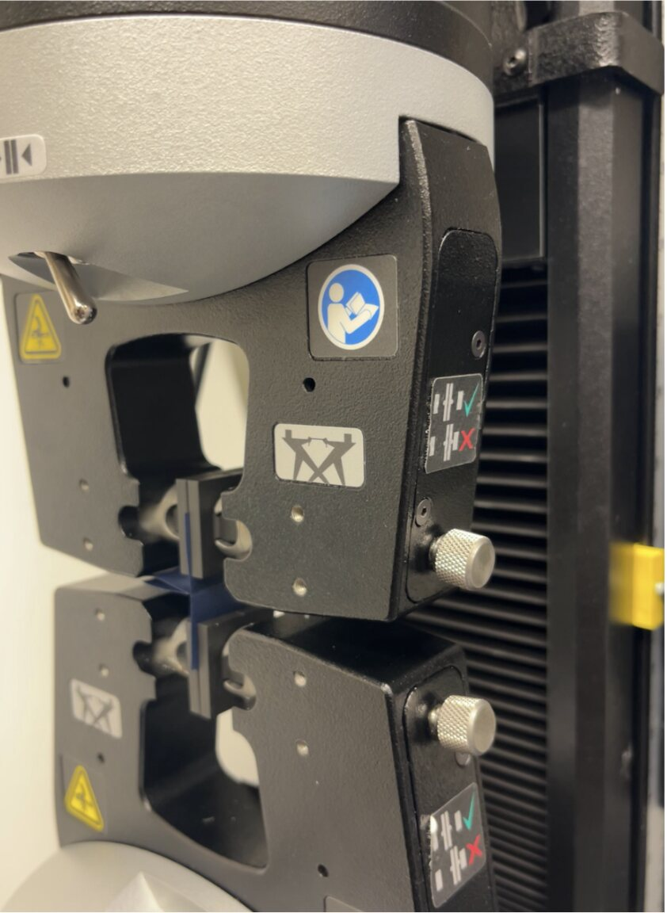

The Preston Innovation Lab needed to apply heat and pressure to fabric only where a bond belongs. We adapted a Prusa MINI to do it and verified the bonds against the lab’s targets.

The lab builds soft, inflatable wearables by fusing layers of textile with heat and pressure. Its only tool was a large heat press that treats the whole surface at once, so every design needed pre-cut adhesive layers to shield the areas that should stay open.
That process was slow, wasted material, let layers shift, and sometimes left adhesive blocking the airways a design depends on. An earlier retrofitted 3D printer was too hard to use.

Brief: a localized heating tool that bonds textiles precisely, with adjustable temperature, pressure, and speed.
We broke the problem into four blocks (heating, pressure, fixation, motion) and recombined partial ideas into complete ones. Scoring weighted intricacy at 30%, with fixation and pressure at 20% each. Fixation was not on our original criteria list; screening showed that perfect heat and pressure mean nothing if the fabric moves, so we added it.
A heated metal point on a 3D-printer gantry with magnetic fixation won. It beat the runner-up, a heated stamp on a hinge, because it can change temperature and pressure partway through a design.
The prototype is a Prusa MINI whose hot nozzle is the bonding tool. The nozzle supplies the heat, the z-axis sets the pressure, and bar magnets on the steel bed hold the textile. We converted the lab’s design images to toolpaths with Inkscape, and I wrote and edited the G-code that controls each move. Heat and pressure land within 0.4 mm.


| Criterion | Target | Result |
|---|---|---|
| Bond strength, tensile pull | About 5 N/mm | 5.016 N/mm average |
| Fixation, textile shift | Under 0.1 cm | Under 0.1 cm average, nine trials |
| Intricacy, path deviation | Under 1 cm | Within 1 cm of the drawn design |
| Durability, cyclic inflation | No leaks or separation | None after 12 h at 22 psi |

We gripped bonded samples of several sizes in a tensile testing machine and raised the force until the layers separated. The lab’s target was about 5 N/mm; our samples averaged 5.016 N/mm.
Before each bond we marked the magnet positions on the print bed and taped a reference along the textile’s edge. Afterward we measured how far the fabric had moved. Across nine trials in three bonding configurations, the average shift was under 0.1 cm.
We measured distances between set points on the bonded fabric and compared them with the dimensions of the design drawn in Inkscape. The bonds stayed within 1 cm of the drawing.
We inflated bonded samples to 22 psi with an air pump and cycled them through inflation and deflation for 12 hours. No sample leaked or separated.
A thermocouple wired to an Arduino measured the nozzle tip while it bonded. It read about 15 °C off the printer’s display on average. Precise heat control was not a design criterion, so this informed our settings but did not change the design.
Once the concept could deliver enough heat and pressure, we replaced those two criteria with bond strength, because that is what the lab needs from a finished part.
Team: Daniel Rosenstrauch, Didi Jack, Van Do, David Fankhauser, Sam Kwan.